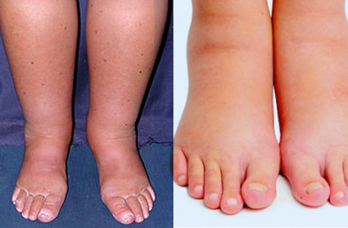

O que é Edema Periférico? Conheça as causas, tratamento e cuidados
O que é Edema Periférico?
Edema periférico é o inchaço (acúmulo anormal de líquido) nos tecidos localizados fora do centro do corpo, especialmente em pés, tornozelos, pernas, mãos ou braços. Esse líquido se acumula no espaço intersticial — o espaço entre as células — quando há desequilíbrio entre a pressão dos vasos sanguíneos e a drenagem linfática.
Principais Causas
O edema periférico não é uma doença em si, mas um sinal clínico de várias condições possíveis:
Causas cardíacas
Insuficiência cardíaca: o coração bombeia com menos eficiência, o sangue se acumula nas veias, e o líquido extravasa para os tecidos (edema geralmente bilateral e simétrico nas pernas).
Causas renais
Doenças dos rins (como síndrome nefrótica, insuficiência renal) — perda de proteínas pela urina diminui a pressão oncótica e facilita o extravasamento de líquido.
Causas hepáticas
Doenças do fígado (como cirrose): diminuição da produção de albumina e aumento da pressão venosa portal.
Causas venosas
Insuficiência venosa crônica: as veias das pernas têm dificuldade de retornar o sangue ao coração, causando inchaço e sensação de peso.
Outras causas
Linfedema: obstrução do sistema linfático (pós-cirurgia, câncer, infecção, ou congênito).
Medicamentos: como corticoides, bloqueadores de canal de cálcio (amlodipino), anti-inflamatórios, e certos antidepressivos.
Gravidez: aumento da pressão sobre as veias pélvicas e alterações hormonais.
Sedentarismo ou ficar muito tempo em pé/sentado — o sangue tende a se acumular nas pernas.
Sintomas
- Inchaço nas pernas, tornozelos ou pés
- Sensação de peso ou aperto
- Pele esticada ou brilhante
- Dificuldade para calçar sapatos
- Marcas na pele após pressionar a área
Diagnóstico
Feito por exame físico e histórico clínico, podendo incluir:
- Exames de sangue (função renal, hepática, cardíaca, proteínas)
- Ultrassonografia Doppler (para investigar insuficiência venosa ou trombose)
- Eletrocardiograma / Ecocardiograma
- Urina (para avaliar perda de proteína)
Tratamento
Depende da causa. O foco é corrigir o problema de base e aliviar os sintomas:
Se for cardíaco
- Diuréticos (furosemida, espironolactona)
- Controle da pressão e do sal na dieta
- Tratamento da insuficiência cardíaca
Se for renal:
- Ajuste do tratamento da doença renal
- Controle de proteínas e sal
Se for hepático:
- Restrição de sal e líquidos
- Medicação para reduzir a pressão portal
- Tratamento da doença hepática
Se for venoso ou linfático:
- Elevação das pernas
- Meias de compressão elástica
- Fisioterapia e drenagem linfática
- Evitar ficar parado muito tempo
- Em alguns casos, cirurgia vascular
Cuidados gerais e prevenção
- Reduzir sal na dieta
- Manter peso saudável
- Praticar exercícios (caminhada, alongamento, panturrilha ativa)
- Evitar ficar muito tempo sentado ou em pé
- Usar meias de compressão quando indicado
- Elevar as pernas ao descansar
Quando procurar um médico?
Procure atendimento se houver:
- Inchaço súbito em apenas uma perna (pode ser trombose venosa profunda)
- Dor intensa, vermelhidão ou calor local
- Falta de ar, dor no peito (pode indicar embolia pulmonar)
- Edema persistente ou que piora rapidamente
- Feridas que não cicatrizam